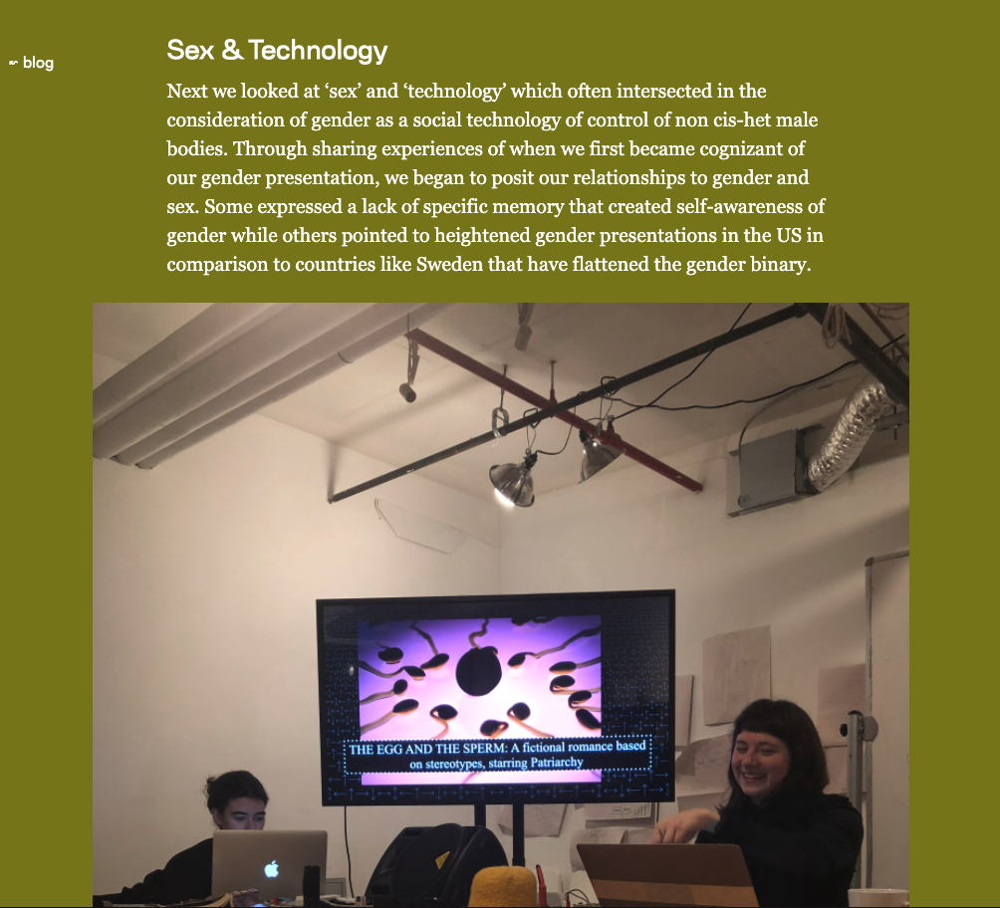
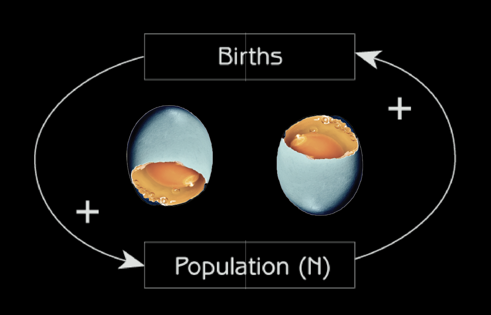

Cybernetics of Sex is an ongoing research and teaching project that asks: What can cybernetics, the study of how we shape and are shaped by systems, teach us about the sexual and social reproduction of gender and sexism? How does sex become gender and what are the politics surrounding who gets reproduced? Cybernetics of Sex is a dialogue between sociotechnical and sexual education.
The project explores how social regulatory systems are encoded into technological platforms, and disentangle the ways in which they produce social pressure and govern behavior through somatic exercises and artistic expression. We confront difficult conversations and collectively cultivate a space of openness and mutual support. This research and teaching project has found a home at the Tate Exchange, School for Poetic Computation, and NYU’s Interactive Telecommunications Program.
The project explores how social regulatory systems are encoded into technological platforms, and disentangle the ways in which they produce social pressure and govern behavior through somatic exercises and artistic expression. We confront difficult conversations and collectively cultivate a space of openness and mutual support. This research and teaching project has found a home at the Tate Exchange, School for Poetic Computation, and NYU’s Interactive Telecommunications Program.


 ⁕ Code Societies Blog: Cybernetics of Sex: Technology, Feminisms, & the Choreography of Culture
⁕ Cybernetics of Sex Arena Channel
⁕ Sexual Labor Arena Channel 